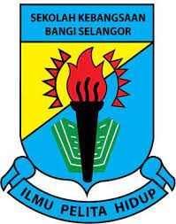

School Collection
|
I started my school journey at SRAI Bandar Baru Bangi for 3 years only. this is because the distance between my house and the school is quite far and no one can send me to school every day. |
|  |
Then, I moved to Sekolah Kebangsaan Bangi. In here I went to school from Year 3 until Year 6. I took the UPSR and PSRA exams here with my other friends. I finished my primary school here and have many bitter and sweet memories that I will always remember |
| |
for secondary school, i started at Sekolah Menengah Kebangsaan Bandar Seri Putra, Selangor. Here I went to school for 2 weeks only because I got an offer to go to a secondary religious school in Sepang |
|
Then, I moved to Sekolah Agama Menengah Bandar Baru Salak Tinggi,Sepang and I took SPM and spent my final year of schooling here. |